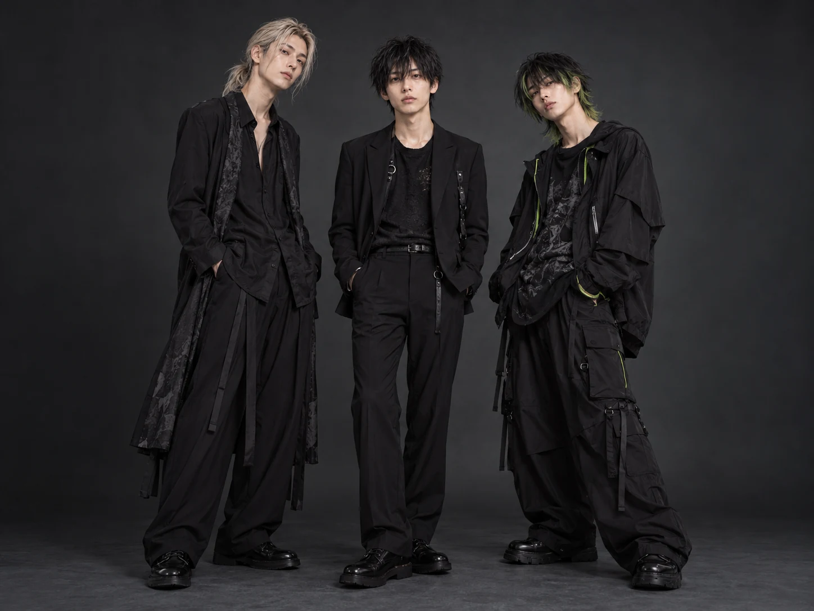

01 / THE LATEST
ALL NEWS↗NEWS
02 / SOUND ON
NEW MUSIC
FRe:Q. / NEW SONGMidnight
calling音の、その先へ。FRe:Q.
calling音の、その先へ。FRe:Q.
NEW SONG / 詳細は後日発表
Midnight calling
TVアニメ『4i RADIO』オープニングテーマ。FRe:Q.初のTVアニメタイアップ楽曲。リリース日・収録内容は後日発表。
03 / WHO WE ARE
MEET THE THREE↗PROFILE
音楽と身体。
そのあいだで、鳴らす。
FRe:Q. / フリーク
演劇や小劇場で活動していた3人が、2024年に結成。エレクトロポップ、ダンスロック、オルタナティブポップを軸に、音楽・ダンス・身体表現を融合させたパフォーマンスを展開する。演劇経験から生まれる物語性のあるステージングで、音と身体の新しい関係を探り続けている。
MINATOIORINAGI